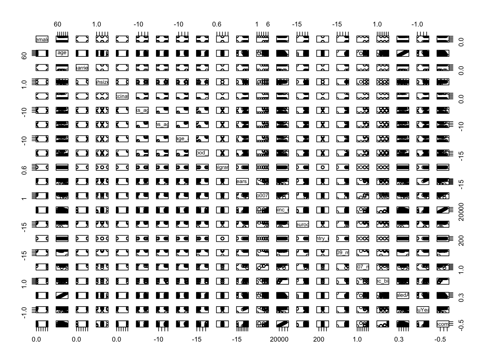

An Introduction to Neural Networks
What are neural networks?
An intuitive introduction to Neural Networks
In this session, Prof. Dr. Robin Cowan will give is an intuitive introduction to neural networks. He has also prepared an exercise using data from SHARE, the Survey of Health, Ageing and Retirement in Europe. Please watch his video-lesson to get the intuition behind neural network algorithms and you can then follow policy-relevant application: predicting income-vulnerable older people in Europe.
Why would being able to predict what will make an older person struggle financially be policy-relevant?
This is a discussion point that you can explore. But you might want to investigate what the average old-age pension is in some European countries, and what the average cost of living is. After working for more than half of your life, I’m sure you’d like to live comfortably…
R practical
As always, start by opening the libraries that you’ll need to
reproduce the script below.
Unfortunately, we are unable to share the dataset ourselves. However, if you wish to replicate this exercise at home (and use one of the many target variables that Robin has proposed to see how our model fares for those), you can request access to the dataset by creating an account with SHARE. You’ll need to specify this is for learning purposes, but you won’t be denied it.
rm(list = ls()) # this line cleans your Global Environment.
setwd("~/Desktop/NeuralNets") # set your working directory
# do not forget to install neuralnet and scales, which are packages we haven't used before
library(tidyverse) # our favourite data wrangling ackagy
library(neuralnet) # a package specific for neural networks
library(scales) # to control the appearance of axis and legend labels
library(skimr) # dataset summary
# import data
load("SHARE_DATA.rda")
## Notice that we're using the load() function, this is because the dataset is in .rda format, the standard R dataset format
## Put it into a structure with an easy name, the remove the original
z <- easySHARE_rel8_0_0
rm(easySHARE_rel8_0_0)You can explore the dataset now (and refer to the SHARE website if you have any questions about the variables).
names(z)## [1] "mergeid" "hhid" "coupleid"
## [4] "wave" "wavepart" "int_version"
## [7] "int_year" "int_month" "country"
## [10] "country_mod" "language" "female"
## [13] "dn002_mod" "dn003_mod" "dn004_mod"
## [16] "age" "birth_country" "citizenship"
## [19] "iv009_mod" "q34_re" "isced1997_r"
## [22] "eduyears_mod" "mar_stat" "hhsize"
## [25] "partnerinhh" "int_partner" "age_partner"
## [28] "gender_partner" "mother_alive" "father_alive"
## [31] "siblings_alive" "ch001_" "ch021_mod"
## [34] "ch007_hh" "ch007_km" "sp002_mod"
## [37] "sp003_1_mod" "sp003_2_mod" "sp003_3_mod"
## [40] "sp008_" "sp009_1_mod" "sp009_2_mod"
## [43] "sp009_3_mod" "books_age10" "maths_age10"
## [46] "language_age10" "vaccinated" "childhood_health"
## [49] "sphus" "chronic_mod" "casp"
## [52] "euro1" "euro2" "euro3"
## [55] "euro4" "euro5" "euro6"
## [58] "euro7" "euro8" "euro9"
## [61] "euro10" "euro11" "euro12"
## [64] "eurod" "bfi10_extra_mod" "bfi10_agree_mod"
## [67] "bfi10_consc_mod" "bfi10_neuro_mod" "bfi10_open_mod"
## [70] "hc002_mod" "hc012_" "hc029_"
## [73] "maxgrip" "adlwa" "adla"
## [76] "iadla" "iadlza" "mobilityind"
## [79] "lgmuscle" "grossmotor" "finemotor"
## [82] "recall_1" "recall_2" "orienti"
## [85] "numeracy_1" "numeracy_2" "bmi"
## [88] "bmi2" "smoking" "ever_smoked"
## [91] "br010_mod" "br015_" "ep005_"
## [94] "ep009_mod" "ep011_mod" "ep013_mod"
## [97] "ep026_mod" "ep036_mod" "co007_"
## [100] "thinc_m" "income_pct_w1" "income_pct_w2"
## [103] "income_pct_w4" "income_pct_w5" "income_pct_w6"
## [106] "income_pct_w7" "income_pct_w8"## and how big it is
dim(z) ## [1] 412110 107# ==== we can also use our trusted skimr package ==== #
# skim(z)
# =================================================== #
# Remember to take out the hashtag to print the command!
- Data Preparation
Now we are going to clean up some things in the data to make it useful.
Select a subset of the countries: Spain, France, Italy, Germany, Poland. These are identified in the data with numbers:
+ Spain 724; France 250; Italy 380; Germany 276; NL 528; Poland 616
countries <- c(724, 250, 380, 276, 528, 616)In the dataset, negative numbers indicate some kind of missing data, so we will replace them with NA (R-speak for missing values).
We then select years since 2013 (let’s focus on the most recent cohorts)
Restrict our data to observations that have certain qualities: we want people who are retired (ep005 ==1).
z1 <- z %>%
filter(country_mod %in% countries )%>% # this line subsets the z dataset to only the countries we're interested in (expressed in the line above)
mutate(across(everything(), function(x){replace(x, which(x<0), NA)})) %>% # this line replaces all values across the entire dataframe that are less than 0 to NA (missing)
filter(int_year >=2013) %>% # now we're subsetting the dataset to the years 2013 and after
filter(ep005_ == 1) # and finally, keeping only people old enought for retirementAt this point you should have decreased the number of observation by 366431 (new obs. = 45679). z1 now contains a cleaner version of the dataset (feel free to delete z)
PS. The following symbols %>% are called pipe operators. They belong to the dplyr packaged, which is masked within the tidyverse. They allow you to indicate a series of actions to do to the object in a sequence, just as above.
Now let’s create some variables for our model
## Create the variable migrant
## change the nature of married to a dummy variable
## change the nature of our vaccination variable to zero or 1
z1 <- z1 %>%
mutate(migrant = ifelse(birth_country==country,0,1)) %>%
mutate(married=ifelse((mar_stat==1 | mar_stat==2),1,0))%>%
mutate(vaccinated=ifelse(vaccinated==1,1,0))At this point we should have 109 variables (because we created two new variables and rewrote 1.
Select the variables we want in the analysis
To access the full survey with variable definitions, here’s a link to the PDF in English.
## get rid of crazy income values (the people with high income are not not part of our population of interest (regular folks who need to save for retirement))
## and make our dependent variable (co007, which is whether the household struggles to make ends meet) a factor
z1 <- z1 %>%
dplyr::select(female,age,married,hhsize,vaccinated,books_age10,maths_age10,language_age10,childhood_health,migrant,eduyears_mod,co007_,thinc_m,eurod,country_mod,iv009_mod) %>%
filter(thinc_m < 100000)%>% # people earning above 100,000 are excluded
mutate(co007_ = as.factor(co007_))
# z1 should now contain only 16 variables and 37,286 observations (a more manageable subset)What is our target variable?
In the English Questionare of the SHARE dataset, the variable asks:
Thinking of your household's total monthly income, would you say that your household is able to make ends meet... (Income struggle)
(the possible answers include: )
1. With great difficulty
2. With some difficulty
3. Fairly easily
4. EasilyLet’s work with this variable to turn this into a classification problem.
## aggregate income struggle variable into 2 categories and add to our data
z1$co007_mod <- z1$co007_ # here we're just creating a duplicate of the co007_ variable but with a different name
# it's usually a good idea to manipulate a duplicated variable in case you make a mistake and need to call on the original/untransformed data again
z1$co007_mod[z1$co007_ %in% c(1,2)] <- 1 # if the values in var z1$co007_ are 1 or 2, transform them into 1, store this in our new z1$co007_mod variable
z1$co007_mod[z1$co007_ %in% c(3,4)] <- 2 # if the values in var z1$co007_ are 3 or 4, transform them into 2, store this in our new z1$co007_mod variable
## change the way to factor is defined to have only 2 levels
z1$co007_mod <- as.factor(as.integer(z1$co007_mod))
#levels(z1$co007_mod) <- c(1,2)Now we have a variable that indicates whether a household struggles (1) or doesn’t struggle (2) to make ends meet.
A different dependent variable could just be income. To make that sensible we make income bands (or ‘bins’): var thinc_m directly asks annual salary.
# we're creating quartiles (to which income quartile do you belong, given your annual salary? the lowest? the highest?)
z1$inc_bin = cut(z1$thinc_m,quantile(z1$thinc_m,breaks=c(0,0.25,0.5,075,1),na.rm=T))We won’t work with the inc_bin (classification) variable, but it’s there if you wish to challenge yourself to create a neural network model for it.
Cleaning missing values (recall ML needs a full dataset)
## get rid of any observation that contains NA
sum(is.na(z1))## [1] 140821# we have 140,821 missing values across the entire dataset. You can get a glimpse of which variables have the most missing values with the skim() function
skim(z1)| Name | z1 |
| Number of rows | 37286 |
| Number of columns | 18 |
| _______________________ | |
| Column type frequency: | |
| factor | 3 |
| numeric | 15 |
| ________________________ | |
| Group variables | None |
Variable type: factor
| skim_variable | n_missing | complete_rate | ordered | n_unique | top_counts |
|---|---|---|---|---|---|
| co007_ | 623 | 0.98 | FALSE | 4 | 4: 12700, 3: 12382, 2: 8843, 1: 2738 |
| co007_mod | 623 | 0.98 | FALSE | 2 | 2: 25082, 1: 11581 |
| inc_bin | 318 | 0.99 | FALSE | 4 | (2.: 9322, (1.: 9321, (3.: 9321, (0,: 9004 |
Variable type: numeric
| skim_variable | n_missing | complete_rate | mean | sd | p0 | p25 | p50 | p75 | p100 | hist |
|---|---|---|---|---|---|---|---|---|---|---|
| female | 0 | 1.00 | 0.47 | 0.50 | 0.0 | 0.00 | 0.00 | 1.00 | 1.0 | ▇▁▁▁▇ |
| age | 2 | 1.00 | 73.32 | 7.86 | 42.2 | 67.20 | 72.30 | 78.80 | 102.3 | ▁▃▇▃▁ |
| married | 208 | 0.99 | 0.71 | 0.45 | 0.0 | 0.00 | 1.00 | 1.00 | 1.0 | ▃▁▁▁▇ |
| hhsize | 0 | 1.00 | 2.02 | 0.88 | 1.0 | 2.00 | 2.00 | 2.00 | 10.0 | ▇▁▁▁▁ |
| vaccinated | 29307 | 0.21 | 0.93 | 0.25 | 0.0 | 1.00 | 1.00 | 1.00 | 1.0 | ▁▁▁▁▇ |
| books_age10 | 24733 | 0.34 | 1.85 | 1.11 | 1.0 | 1.00 | 1.00 | 3.00 | 5.0 | ▇▃▂▁▁ |
| maths_age10 | 25127 | 0.33 | 2.80 | 0.85 | 1.0 | 2.00 | 3.00 | 3.00 | 5.0 | ▁▃▇▂▁ |
| language_age10 | 25161 | 0.33 | 2.81 | 0.81 | 1.0 | 2.00 | 3.00 | 3.00 | 5.0 | ▁▃▇▂▁ |
| childhood_health | 29173 | 0.22 | 2.33 | 1.03 | 1.0 | 1.00 | 2.00 | 3.00 | 6.0 | ▇▅▁▁▁ |
| migrant | 250 | 0.99 | 1.00 | 0.00 | 1.0 | 1.00 | 1.00 | 1.00 | 1.0 | ▁▁▇▁▁ |
| eduyears_mod | 2542 | 0.93 | 10.21 | 4.44 | 0.0 | 7.00 | 10.00 | 13.00 | 25.0 | ▃▇▇▂▁ |
| thinc_m | 0 | 1.00 | 25379.33 | 16076.56 | 0.0 | 14357.39 | 21731.12 | 32783.51 | 99829.1 | ▇▇▂▁▁ |
| eurod | 1485 | 0.96 | 2.57 | 2.31 | 0.0 | 1.00 | 2.00 | 4.00 | 12.0 | ▇▃▂▁▁ |
| country_mod | 0 | 1.00 | 434.20 | 184.53 | 250.0 | 276.00 | 380.00 | 616.00 | 724.0 | ▇▃▂▂▃ |
| iv009_mod | 1269 | 0.97 | 3.68 | 1.34 | 1.0 | 3.00 | 4.00 | 5.00 | 5.0 | ▂▂▃▆▇ |
# we'll use the drop_na() function, which will delete any row if it has at least one missing value (be careful when doing this in your own data cleaning)
z2 <- drop_na(z1)
dim(z2)## [1] 6881 18# z2 is a small subset of the original dataset which contains i) no missing values, ii) only relevant variables for our model on retirement, and iii) 6,881 observationsRescaling data
## age, years of education and income (thinc_m) have a big range, so let's rescale it to between plus and minus 1
## scaling allows us to compare data that aren't measured in the same way
z4 <- z2 %>%
mutate(ScaledAge = rescale(age,to=c(-1,1)))%>%
mutate(EduYears=rescale(eduyears_mod,to=c(-1,1)))%>%
mutate(income = rescale(thinc_m,to=c(-1,1)))
# z4 is now the working dataset, with 3 more (scaled) variables
## check what we have
summary(z4$ScaledAge)## Min. 1st Qu. Median Mean 3rd Qu. Max.
## -1.00000 -0.16230 0.01222 0.04492 0.22862 1.00000## check what variables we now have in the data
names(z4)## [1] "female" "age" "married" "hhsize"
## [5] "vaccinated" "books_age10" "maths_age10" "language_age10"
## [9] "childhood_health" "migrant" "eduyears_mod" "co007_"
## [13] "thinc_m" "eurod" "country_mod" "iv009_mod"
## [17] "co007_mod" "inc_bin" "ScaledAge" "EduYears"
## [21] "income"## let's look at the data just to see if there is anything observable at the start
## plot the first 100 observations
## we will use a pairs plot
plot(head(z4,100))
# you can use the zoom function of the image if you're replicating this script locally (that way you can read the variable names).
## look more closely at migrant and vaccination (the others seem to have a good spread)
table(z4$migrant)##
## 1
## 6881## there is only one value so no point in including it
## look at vaccination
table(z4$vaccinated)##
## 0 1
## 367 6514Select a subset of the data, including only relevant variables
z5 <- z4 %>%
dplyr::select(female,married,hhsize,books_age10, maths_age10, language_age10, EduYears,eurod, country_mod,iv009_mod, inc_bin, co007_,co007_mod)Notice that we create new datasets everytime we subset, instead of rewriting the old one. This is probably a good idea in case we need to take a step back.
To be able to work with the neuralnet package, it’s best to have dummy variables instead of one variable with various categories. So, let’s start that process:
## now change country to dummy variables
country <- as.factor(z5$country_mod)
cmat <- model.matrix(~0+country)The model.matrix() function takes a formula and a data frame (or similar structure) and returns a matrix with rows corresponding to cases and columns to predictor variables.
## add to z5
z5 <- cbind(z5,cmat)
head(z5)## female married hhsize books_age10 maths_age10 language_age10 EduYears
## 104800 1 1 2 1 3 3 -0.12
## 104803 0 1 2 1 2 3 -0.12
## 104808 1 1 2 1 3 3 0.12
## 104812 0 1 2 1 3 3 -0.04
## 104816 0 1 2 1 3 3 0.20
## 104852 0 0 1 3 4 3 -0.12
## eurod country_mod iv009_mod inc_bin co007_ co007_mod
## 104800 5 276 5 (1.44e+04,2.17e+04] 2 1
## 104803 5 276 5 (1.44e+04,2.17e+04] 2 1
## 104808 3 276 5 (3.28e+04,9.98e+04] 4 2
## 104812 0 276 5 (3.28e+04,9.98e+04] 4 2
## 104816 4 276 4 (3.28e+04,9.98e+04] 4 2
## 104852 3 276 4 (1.44e+04,2.17e+04] 2 1
## country250 country276 country380 country528 country724
## 104800 0 1 0 0 0
## 104803 0 1 0 0 0
## 104808 0 1 0 0 0
## 104812 0 1 0 0 0
## 104816 0 1 0 0 0
## 104852 0 1 0 0 0class(z5)## [1] "data.frame"To finalise the data preparation, let’s do some variable cleaning:
## fix level names of inc_bin
levels(z5$inc_bin) <- c("first","second","third","fourth")
names(z5)## [1] "female" "married" "hhsize" "books_age10"
## [5] "maths_age10" "language_age10" "EduYears" "eurod"
## [9] "country_mod" "iv009_mod" "inc_bin" "co007_"
## [13] "co007_mod" "country250" "country276" "country380"
## [17] "country528" "country724"
- Model Preparation
This time around, we’re not using caret functions to split our data, or define our target and predictors. We’ll do this “manually”. The first thing we want to do, is create and object of the form [target ~ x1 + x2 + …+ xk]. This is how R reads target variables (on the left hand side of the squiggle) and predictors (on the right hand side of the squiggle and separated by + signs).
Prepare model
## now make the formula we want to estimate
myform0 <- paste(names(z5)[c(1:8,10,14:18)],collapse=" + ")
# the object myform0 contains all the predictor variables for our neural network model
myform <- paste( "co007_mod",c(myform0),sep=" ~ ")
all.equal(myform,myform0) # returns one mistmatch.## [1] "1 string mismatch"# myform includes the income variable as a predictor, so it's all our previous predictors + co007_mod (as target!)
## look at the formula to make sure we got what we wanted
print(myform)## [1] "co007_mod ~ female + married + hhsize + books_age10 + maths_age10 + language_age10 + EduYears + eurod + iv009_mod + country250 + country276 + country380 + country528 + country724"Data Split: train and test
## set the random seed so we can duplicate things if we want to
set.seed(4)
# we're doing this manually, instead of using our trusted caret() package
trainRows <- sample(1:nrow(z5),0.8*nrow(z5)) # 80% of data to train
testRows <- (1:nrow(z5))[-trainRows]
## now we have training data: trainz5; and testing data: testz5
trainz5 <- z5[trainRows,]
testz5 <- z5[testRows,]Train our neural network model!
set.seed(4)
model <- neuralnet(
myform, ## use the formula we defined above
data = trainz5, ## tell it what data to use
hidden=c(6), ## define the number and size of hidden layers: here we have one layer with 5 nodes in it
linear.output = F, # F to show this is a classification problem (since our predictor is a factor) T returns a linear regression output. This also means that the (default) activation function is the sigmoid!
stepmax = 1000000, ## how many iterations to use to train it (1 million, but it converges before that mark)
lifesign="full", ## get some output while it works
algorithm = "rprop+", # it is a gradient descent algorithm "Resilient Propagation".
learningrate.limit = NULL,
learningrate.factor =
list(minus = 0.5, plus = 1.2),
threshold = 0.01
)## hidden: 6 thresh: 0.01 rep: 1/1 steps: 1000 min thresh: 1.22795192815468
## 2000 min thresh: 0.408629618104168
## 3000 min thresh: 0.255375732991587
## 4000 min thresh: 0.255375732991587
## 5000 min thresh: 0.206075288342767
## 6000 min thresh: 0.181738092119449
## 7000 min thresh: 0.142443872190076
## 8000 min thresh: 0.108056969567729
## 9000 min thresh: 0.0965760103945601
## 10000 min thresh: 0.0924441234865121
## 11000 min thresh: 0.0924441234865121
## 12000 min thresh: 0.0924441234865121
## 13000 min thresh: 0.0903834987550307
## 14000 min thresh: 0.0903834987550307
## 15000 min thresh: 0.0903834987550307
## 16000 min thresh: 0.0903834987550307
## 17000 min thresh: 0.0903834987550307
## 18000 min thresh: 0.0903834987550307
## 19000 min thresh: 0.0903834987550307
## 20000 min thresh: 0.0903834987550307
## 21000 min thresh: 0.0903834987550307
## 22000 min thresh: 0.0903834987550307
## 23000 min thresh: 0.0903834987550307
## 24000 min thresh: 0.0903834987550307
## 25000 min thresh: 0.0903834987550307
## 26000 min thresh: 0.0903834987550307
## 27000 min thresh: 0.0903834987550307
## 28000 min thresh: 0.0903834987550307
## 29000 min thresh: 0.0903834987550307
## 30000 min thresh: 0.0903834987550307
## 31000 min thresh: 0.0903834987550307
## 32000 min thresh: 0.0903834987550307
## 33000 min thresh: 0.0903834987550307
## 34000 min thresh: 0.0903834987550307
## 35000 min thresh: 0.0903834987550307
## 36000 min thresh: 0.0903834987550307
## 37000 min thresh: 0.0903834987550307
## 38000 min thresh: 0.0903834987550307
## 39000 min thresh: 0.080031973683847
## 40000 min thresh: 0.080031973683847
## 41000 min thresh: 0.080031973683847
## 42000 min thresh: 0.0781654073237371
## 43000 min thresh: 0.077217534035844
## 44000 min thresh: 0.077217534035844
## 45000 min thresh: 0.0663306621049722
## 46000 min thresh: 0.0663306621049722
## 47000 min thresh: 0.0663306621049722
## 48000 min thresh: 0.0663306621049722
## 49000 min thresh: 0.0640628426880909
## 50000 min thresh: 0.0549832161036877
## 51000 min thresh: 0.0549832161036877
## 52000 min thresh: 0.0549832161036877
## 53000 min thresh: 0.0535065197695844
## 54000 min thresh: 0.0451843906210169
## 55000 min thresh: 0.0407706834064874
## 56000 min thresh: 0.0407706834064874
## 57000 min thresh: 0.0407706834064874
## 58000 min thresh: 0.0407706834064874
## 59000 min thresh: 0.0407706834064874
## 60000 min thresh: 0.0398750949182902
## 61000 min thresh: 0.0347740947416519
## 62000 min thresh: 0.0347740947416519
## 63000 min thresh: 0.0347740947416519
## 64000 min thresh: 0.0333526116102184
## 65000 min thresh: 0.0333526116102184
## 66000 min thresh: 0.0333526116102184
## 67000 min thresh: 0.0333526116102184
## 68000 min thresh: 0.0333526116102184
## 69000 min thresh: 0.0316000239700686
## 70000 min thresh: 0.0306565221261171
## 71000 min thresh: 0.0274365035081705
## 72000 min thresh: 0.0274365035081705
## 73000 min thresh: 0.026496818727535
## 74000 min thresh: 0.026496818727535
## 75000 min thresh: 0.026496818727535
## 76000 min thresh: 0.026496818727535
## 77000 min thresh: 0.026496818727535
## 78000 min thresh: 0.026496818727535
## 79000 min thresh: 0.026496818727535
## 80000 min thresh: 0.026496818727535
## 81000 min thresh: 0.0259845739797748
## 82000 min thresh: 0.0259845739797748
## 83000 min thresh: 0.0259845739797748
## 84000 min thresh: 0.0240579990735271
## 85000 min thresh: 0.0226252873882434
## 86000 min thresh: 0.0226252873882434
## 87000 min thresh: 0.0221455597930601
## 88000 min thresh: 0.0221455597930601
## 89000 min thresh: 0.0221455597930601
## 90000 min thresh: 0.0221455597930601
## 91000 min thresh: 0.0203603362622581
## 92000 min thresh: 0.0200746219013495
## 93000 min thresh: 0.0200746219013495
## 94000 min thresh: 0.0200746219013495
## 95000 min thresh: 0.0200746219013495
## 96000 min thresh: 0.0200746219013495
## 97000 min thresh: 0.0163554171793395
## 98000 min thresh: 0.0163554171793395
## 99000 min thresh: 0.0163554171793395
## 1e+05 min thresh: 0.0151167048702273
## 101000 min thresh: 0.0151167048702273
## 102000 min thresh: 0.0151167048702273
## 103000 min thresh: 0.0151167048702273
## 104000 min thresh: 0.0151167048702273
## 105000 min thresh: 0.0151167048702273
## 106000 min thresh: 0.0151167048702273
## 107000 min thresh: 0.0151167048702273
## 108000 min thresh: 0.0151167048702273
## 109000 min thresh: 0.0142885225751462
## 110000 min thresh: 0.0142885225751462
## 111000 min thresh: 0.0142885225751462
## 112000 min thresh: 0.0142885225751462
## 113000 min thresh: 0.0142885225751462
## 114000 min thresh: 0.0142885225751462
## 115000 min thresh: 0.0142455799962317
## 116000 min thresh: 0.0142455799962317
## 117000 min thresh: 0.0142455799962317
## 118000 min thresh: 0.012107497406225
## 119000 min thresh: 0.012107497406225
## 120000 min thresh: 0.012107497406225
## 121000 min thresh: 0.012107497406225
## 122000 min thresh: 0.012107497406225
## 123000 min thresh: 0.0108934985445289
## 124000 min thresh: 0.0108934985445289
## 125000 min thresh: 0.0108934985445289
## 126000 min thresh: 0.0108934985445289
## 127000 min thresh: 0.0108934985445289
## 128000 min thresh: 0.0108934985445289
## 129000 min thresh: 0.0108934985445289
## 130000 min thresh: 0.0108934985445289
## 131000 min thresh: 0.0108934985445289
## 132000 min thresh: 0.0108934985445289
## 133000 min thresh: 0.0108934985445289
## 134000 min thresh: 0.0108934985445289
## 135000 min thresh: 0.0108934985445289
## 136000 min thresh: 0.0108934985445289
## 137000 min thresh: 0.0101758648461206
## 138000 min thresh: 0.0101758648461206
## 139000 min thresh: 0.0101758648461206
## 140000 min thresh: 0.0101758648461206
## 141000 min thresh: 0.0101758648461206
## 142000 min thresh: 0.0101758648461206
## 143000 min thresh: 0.0101758648461206
## 143866 error: 944.06645 time: 3.94 mins# if you get an error, don't worry about it. It's not an issue for our estimation, and it indicates the last iteration (way before 1000000)Now, let’s plot our neural network:
plot(model)
# notice that this is a vanilla network (no deep learning for us!).
Now it is time to test our model’s predictive abilities.
# use our fitted neural network to try to predict what the income states in our test data
set.seed(4)
pred <- predict(model,testz5)As before, we will not use the caret package to call the ConfusionMatrix function, we’ll do all of it manually. We’ll have to manipulate the variables a little, to visualise the confusion matrix in a helpful way:
# add the levels from our target variable as the column names for our predicted values
colnames(pred) <- levels(testz5$co007_mod)
myLabels <- colnames(pred) # get the column names from our prediction vectors and store them in an object
pointPred <- max.col(pred) # find the index of the maximum value of my predictions
pointPred <- myLabels[pointPred] # add the labels (or column names from our predictions)
# Now, we'll store the actual/observed values in an objext as well:
actual <- testz5$co007_mod
actual <- as.factor(as.integer(actual)) # make sure these values are read as factors
# Create the Confusion Matrix using the predicted, observed values and the labels
t1 <- table(actual,pointPred)[,myLabels]
# voilà! manual confusion matrix!
print(t1)## pointPred
## actual 1 2
## 1 134 259
## 2 114 870Now that we have a confusion matrix, we can analyse the performance of our neural network model.
# How many older people struggle to make ends meet?
prop.table(table(testz5$co007_mod))##
## 1 2
## 0.2854031 0.7145969# about 28%...
# How accurate is our model?
sum(diag(t1))/sum(t1)## [1] 0.7291213# this returns the proportion of correct predictions!
# 72% of correctly predicted income status
# so, our neural network model does relatively well in predicting whether older people / pensioneers struggle to make ends meet in selected European countriesIf we recall from previous sessions, it is hard to have accurate predictions of that of which we have less (struggling older people)… look again at the confusion matrix: what do we see? the ratio of correct predictions for non-strugglers (2x2) is higher than for the strugglers (1x1).
Let’s remember what information we can obtain from a confusion matrix:
True Positives (TP): 134 (actual = 1, predicted = 1)
False Negatives (FN): 259 (actual = 1, predicted = 2)
False Positives (FP): 114 (actual = 2, predicted = 1)
True Negatives (TN): 870 (actual = 2, predicted = 2)
Based on these confusion matrix values (and the formulas provided in session 2: logistic classification), we can get our neural network model’s performance metrics:
Accuracy: 72.9%. (we got this above!). It is the proportion of true results regardless of the case.
Recall (Sensitivity): 34.09% (we might want to know this, since we’re trying to identify vulnerable elderly people). It is the proportion of correctly identified vulnerable cases. The formula (if you want to check yourself) is TP/(TP+FN) = 134/(134+259) = 0.340
Alternatively…
# select the needed values from the confusion matrix t1
(t1[1,1])/(t1[1,1]+t1[1,2])## [1] 0.3409669Conclusion
How did we do? Neural networks are all the rage these days, it’s arguably the most famous machine learning algorithm. But don’t be fooled, it is still subject to the same data challenges as the rest of the algorithms we have explored so far.
Python practical
As always, start by opening the libraries that you’ll need to
reproduce the script below.
Unfortunately, we are unable to share the dataset ourselves. However,
if you wish to replicate this exercise at home (and use one of the many
target variables that Robin has proposed to see how our model fares for
those), you can request access to the dataset by creating an account
with SHARE. You’ll need to specify this is for learning purposes, but
you won’t be denied it. In the video, Robin tells you which waves of the
panel he has used. For more information, you should go to the link: https://share-eric.eu/.
You’ll notice that today we’re focusing on European citizens. Even
though Europe is considered the Global North and economically developed,
social policies still play an important role in making sure its people
enjoy a good standard of living. Today’s task is to create a predictive
model for older citizens ready for retirement who struggle to make ends
meet. We’ll use a neural network algorithm for this. This task will help
policymakers in Europe plan for pension schemes and retirement policies.
Another important note: we’ll work with a clean subset of the data,
prepared by Robin. The cleaning and preparation was done with R and you
can take a look at the R practical in this page to see it. We won’t
repeat the process in Python, since we hope that by now you have a
general idea of how to to do data wrangling. We’ll jump straight to the
task!
#==== Python version: 3.10.12 ====#
# Opening libraries
# scikit-learn
import sklearn as sk # our trusted Machine Learning library
from sklearn.model_selection import train_test_split # split the dataset into train and test
from sklearn.metrics import accuracy_score, confusion_matrix, precision_score, recall_score, ConfusionMatrixDisplay # returns performance evaluation metrics
from sklearn.neural_network import MLPClassifier
# non-ML libraries
import numpy as np # a library for numeric analysis
import random # for random state
import csv # a library to read and write csv files
import pandas as pd # a library to help us easily navigate and manipulate dataframes
import seaborn as sns # a data visualisation library
import matplotlib.pyplot as plt # a data visualisation library
from scipy.stats import randint # generate random integer
from graphviz import Digraph
# Uploading data
SHARE = pd.read_csv('/Users/michellegonzalez/Desktop/NeuralNets/SHARE_subset.csv')
- Overview of the data
Let’s take a quick look at what the dataset looks like.
# let's start with the general dimensions and variable names
print(SHARE.shape)## (6881, 19)# and variable names (comma separated)
print(', '.join(SHARE.columns))## Unnamed: 0, female, married, hhsize, books_age10, maths_age10, language_age10, EduYears, eurod, country_mod, iv009_mod, inc_bin, co007_, co007_mod, country250, country276, country380, country528, country724# finally, missing values (best be sure!)
SHARE.isnull().sum() # this sums all missing values per vector/variable## Unnamed: 0 0
## female 0
## married 0
## hhsize 0
## books_age10 0
## maths_age10 0
## language_age10 0
## EduYears 0
## eurod 0
## country_mod 0
## iv009_mod 0
## inc_bin 0
## co007_ 0
## co007_mod 0
## country250 0
## country276 0
## country380 0
## country528 0
## country724 0
## dtype: int64We have \(19\) variables and \(6,881\) observations and no missing values
in the dataset. Let’s tackle the variables now: Unnamed:0 is an ID tag,
nothing to worry about. Then, we’ve got some traditional variables in
socioeconomic analysis: female (or gender), married (or marriage status)
hhsize (household size), and a few indicators about the person’s
educational past: books maths and language at age 10. These questions
ask about a person’s reading, maths and language performance when they
were 10 years old (arguably a good proxy for educational relevance in
the household, and thus a predictor of future employment… but take this
statement with a grain of very salty salt). EduYears directly asks how
many years a person studied, formally. The next variables are quite
interesting: eurod is a depression scale, country_mod indicates where in
Europe the person lives (Spain 724; France 250; Italy 380; Germany 276;
NL 528; Poland 616); similarly, the variables country* are dummies
generated from the country_mod variable. And finally, the target
variable(s): inc_bin was created by Robin, and it indicates whether a
person is in the first, second, third, or fourth income quartile. We
will work with co007_ and co007_mod (which was generated from the
previous variable). Both variables refer to income struggles:
In the English Questionare of the SHARE dataset, the co007_ variable asks:
Thinking of your household's total monthly income, would you say that your household is able to make ends meet...
1. With great difficulty
2. With some difficulty
3. Fairly easily
4. EasilyWhich Robin then recoded into a binary variable that takes on the
value 1 if the person struggles to make ends meet at 2 otherwise
(co007_mod). By doing so, he’s turned the task into a simple
classification model with neural networks.
- Data Split and Fit
# let's quickly look at the location of the relevant variables
SHARE.info()## <class 'pandas.core.frame.DataFrame'>
## RangeIndex: 6881 entries, 0 to 6880
## Data columns (total 19 columns):
## # Column Non-Null Count Dtype
## --- ------ -------------- -----
## 0 Unnamed: 0 6881 non-null int64
## 1 female 6881 non-null int64
## 2 married 6881 non-null int64
## 3 hhsize 6881 non-null int64
## 4 books_age10 6881 non-null int64
## 5 maths_age10 6881 non-null int64
## 6 language_age10 6881 non-null int64
## 7 EduYears 6881 non-null float64
## 8 eurod 6881 non-null int64
## 9 country_mod 6881 non-null int64
## 10 iv009_mod 6881 non-null int64
## 11 inc_bin 6881 non-null object
## 12 co007_ 6881 non-null int64
## 13 co007_mod 6881 non-null int64
## 14 country250 6881 non-null int64
## 15 country276 6881 non-null int64
## 16 country380 6881 non-null int64
## 17 country528 6881 non-null int64
## 18 country724 6881 non-null int64
## dtypes: float64(1), int64(17), object(1)
## memory usage: 1021.5+ KB
# X = female + married + hhsize + books_age10 + maths_age10 + language_age10 + EduYears + eurod + iv009_mod + country250 + country276 + country380 + country528 + country724
# Y = co007_mod
X = SHARE.iloc[:, list(range(1, 9)) + [10] + list(range(14, 19))] # since our range is discontinuous, we've used a combination of list() and range() to indicate which elemenets from the larger dataset we want contained in X. Also note that range has a start (1 here, so the second position) and and end (with the same example, 9 here, 10th position). Whilst the start is inclusive, the end is exclusive. Which means that the range will only capture elements 1 through 8. That's why the second range works even though we only have 18 variables ;).
y = SHARE.iloc[:, 13] # y is a vector containing our target variable, which is in position 13 of the dataframe
# Split data into train and test
X_train, X_test, y_train, y_test = train_test_split(X, y, test_size=0.2, random_state=12345) # random_state is for reproducibility purposes
Now, let’s fit a Neural Network model:
# Initialise the MLPClassifier (or Multilayer Perceptron Classifier).
# Despite the name indicating this type of neural network is used for deep learning, it can also be used for simpler classification "vanilla network" tasks
nn_mlp = MLPClassifier(hidden_layer_sizes=(6,), max_iter=100000, activation='logistic', solver='sgd', random_state=12345) # the solver we're using here is the stochastic gradient descent. This is not what we used in the R practical, but there's no equivalent with the scikit-learn package, so if you peak over there, you might find some differences :).
# Train the model
nn_mlp.fit(X_train, y_train)MLPClassifier(activation='logistic', hidden_layer_sizes=(6,), max_iter=100000,
random_state=12345, solver='sgd')In a Jupyter environment, please rerun this cell to show the HTML representation or trust the notebook. On GitHub, the HTML representation is unable to render, please try loading this page with nbviewer.org.
MLPClassifier(activation='logistic', hidden_layer_sizes=(6,), max_iter=100000,
random_state=12345, solver='sgd')# Predictions on the test dataset
# Something I haven't mentioned before is that the predictions are deterministic based on the random state from the initialised model
pred = nn_mlp.predict(X_test)
# Evaluation of overall the model
Accuracy = accuracy_score(y_test, pred)
print(f"Overall Accuracy of our model: {Accuracy}, not bad!")## Overall Accuracy of our model: 0.7080610021786492, not bad!It seems like we’re relatively good at predicting wether an older European citizen struggles economically. However, let’s explore our model a little more. We’ll start by taking a look at the proportions of strugglers and non-strugglers (our target variable):
# recall that 1 is struggle and 2 is no struggle
SHARE['co007_mod'].value_counts(normalize=True) # when you set normalize = True, you get proportions. False gives you the counts## 2 0.702514
## 1 0.297486
## Name: co007_mod, dtype: float64So, about 29% struggle, and 70% do not. If we recall from previous sessions it is hard to have accurate predictions of that of which we have less… let’s plot a confusion matrix and evaluate the recall (sensitivity) of our model to see how good we are at predicting strugglers.
# visualising a confusion matrix
cm = confusion_matrix(y_test, pred)
print("Confusion Matrix:", cm)## Confusion Matrix: [[ 42 381]
## [ 21 933]]ConfusionMatrixDisplay(confusion_matrix=cm).plot() # create confusion matrix plot## <sklearn.metrics._plot.confusion_matrix.ConfusionMatrixDisplay object at 0x12ea5cf70>plt.show() # display confusion matrix plot created aboveSo, the numbers have switched here: \(2\) is now \(1\) and \(1\) is now \(0\). Let’s have a trip back to memory lane
and remember the values that a confusion matrix provides:
True Positives (TP): 42 (actual = 0, predicted = 0)
False Negatives (FN): 381 (actual = 0, predicted = 1)
False Positives (FP): 21 (actual = 1, predicted = 0)
True Negatives (TN): 933 (actual = 1, predicted = 1)
Based on these confusion matrix values (and the formulas provided in session 2: logistic classification), we can get our neural network model’s performance metrics.
Accuracy: 70%. (we got this above!). It is the proportion of true results regardless of the case. Recall (Sensitivity): 35.22% (we might want to know this, since we’re trying to identify vulnerable older people). It is the proportion of correctly identified vulnerable cases. The formula (if you want to check yourself) is TP/(TP+FN) = 42/(42+381) = 0.099.
Alternatively:
print("Recall:", recall_score(y_test, pred))## Recall: 0.09929078014184398Conclusion
Neural networks are all the rage these days; it’s arguably the most famous machine learning algorithm. But don’t be fooled, it is still subject to the same data challenges as the rest of the algorithms we have explored so far. As you can see, we do pretty badly at predicting who struggles to make ends meet, even though the overall performance of our model was good.
Copyright © 2022 Michelle González Amador & Stephan Dietrich . All rights reserved.